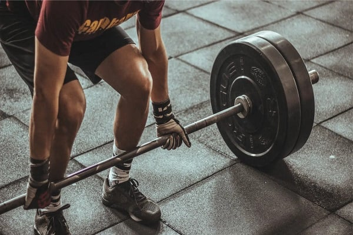
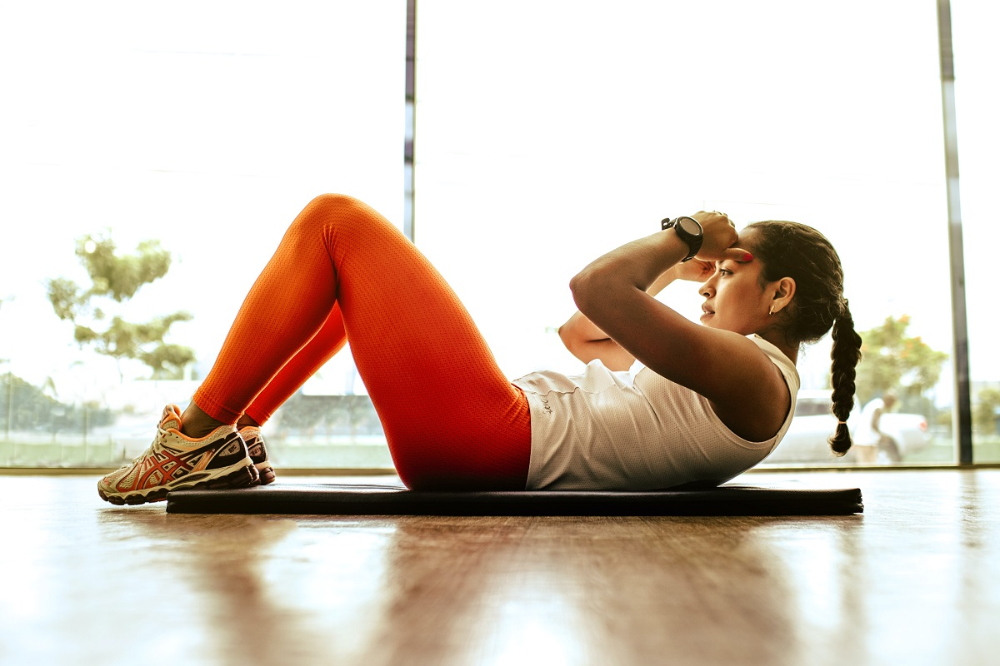
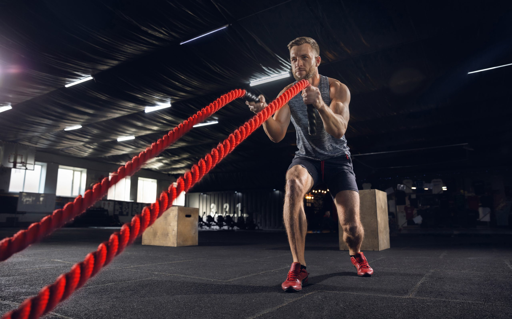
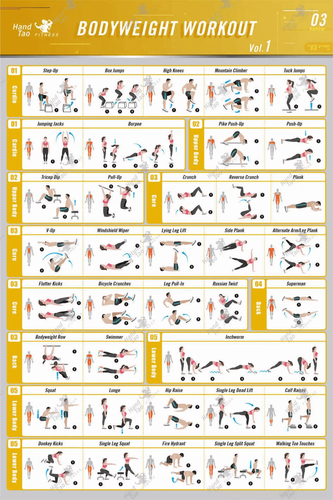

Força: Como Construir Músculos e Desenvolver Resistência Física
Desenvolver força muscular e resistência física é essencial não apenas para melhorar a aparência, mas principalmente para garantir saúde, desempenho e qualidade de vida. A combinação correta de exercícios, descanso e alimentação permite fortalecer o corpo, prevenir lesões e manter a autonomia ao longo dos anos.
💪 Por que a força é tão importante?
A força muscular está diretamente ligada à capacidade do corpo de realizar tarefas do dia a dia e atividades esportivas com eficiência.
Benefícios do treino de força:
- Aumento da massa muscular
- Fortalecimento de ossos e articulações
- Prevenção de lesões
- Melhora da postura e do equilíbrio
- Aceleração do metabolismo
- Auxílio no controle do peso corporal
Quanto mais músculos ativos, maior o gasto energético do corpo, mesmo em repouso.
🏋️♂️ Como construir músculos de forma eficiente
A construção muscular, também chamada de hipertrofia, depende de estímulos adequados e constância.
Pontos fundamentais:
- Exercícios com carga progressiva
- Execução correta dos movimentos
- Regularidade nos treinos
- Intervalos adequados de descanso
Musculação, treino funcional e exercícios com peso corporal são excelentes opções para desenvolver força.



🧱 Resistência física: aguentar mais e melhor
A resistência é a capacidade de manter o esforço por mais tempo sem queda significativa de desempenho.
Como desenvolver resistência:
- Combinar exercícios de força com cardio
- Aumentar gradualmente o volume de treino
- Trabalhar diferentes grupos musculares
- Respeitar o descanso entre sessões
Atividades como circuitos, treinos intervalados e esportes ajudam a melhorar a resistência muscular e cardiovascular.
🥗 Alimentação e recuperação: parte do treino
Sem uma boa alimentação e recuperação, os ganhos são limitados.
O que não pode faltar:
- Proteínas para reconstrução muscular
- Carboidratos para energia
- Hidratação adequada
- Sono de qualidade
O músculo cresce durante o descanso, não apenas durante o treino.
⚠️ Erros comuns ao buscar força e resistência
- Treinar sempre no limite sem descanso
- Ignorar a técnica correta
- Não variar os estímulos
- Alimentar-se de forma inadequada
Evitar esses erros ajuda a manter a evolução constante e segura.
✅ Conclusão
Construir força e desenvolver resistência é um processo contínuo que exige disciplina, planejamento e paciência. Com treinos bem estruturados, alimentação equilibrada e descanso adequado, é possível alcançar um corpo mais forte, resistente e saudável.
Mais do que estética, força é sinônimo de saúde, autonomia e longevidade.